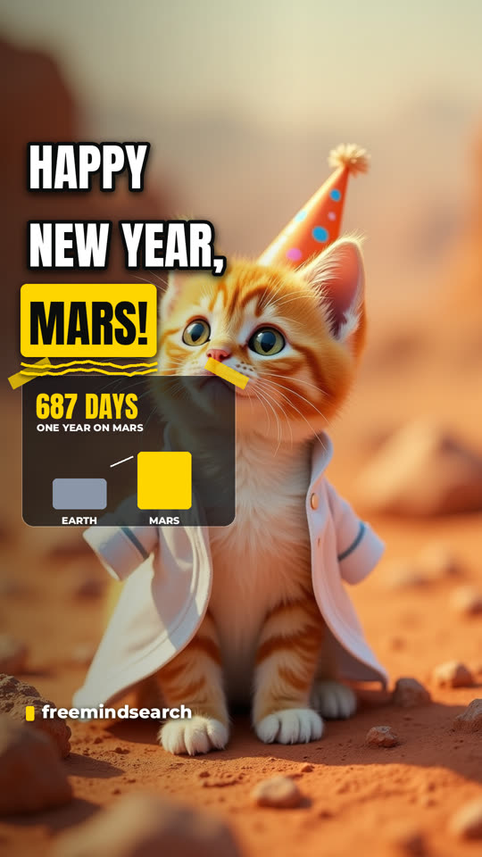

Story
It's New Year's Day on Mars: year 39 just began
Mars began its thirty-ninth year on 30 September 2026 at 08:16 UTC. A Martian year lasts 687 Earth days, a sol is about 24 hours 39 minutes, and the count started in 1955. The next Martian New Year is on 17 August 2028.
Watch on FacebookWatch on InstagramWatch on TikTokWatch on YouTube
Would you trade half your birthdays for a year on Mars?
Sources
- ESA, Happy New Year on Mars: https://www.esa.int/Science_Exploration/Human_and_Robotic_Exploration/Happy_New_Year_on_Mars
Made with AI: the presenter, voice and visuals are AI-generated. Every story is researched and fact-checked by a person, with its sources listed.